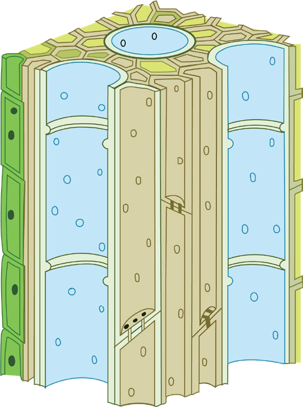
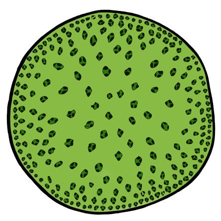
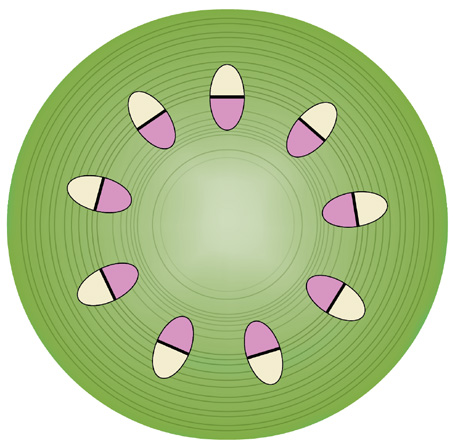

Student’s Book - Form Two

Biology for Secondary Schools
77
together with their associated fibres are collectively known as vascular bundles. The xylem tissue has the role of transporting water and mineral salts absorbed from the soil through roots
to all parts of the plant. The phloem tissue is responsible for transporting manufactured food from the sites of photosynthesis to all parts of the plant.
Xylem is one of the conducting tissues in plants, which primarily transports water and dissolved minerals from roots to stem and leaves. It also provides mechanical strength to the plants. It mostly occurs in the inner part of the vascular bundles.
The movement of substances in the xylem of the main stem is always upward.
Xylem is a complex tissue composed of four different kinds of cells which are xylem vessel elements, tracheids, fibres, and parenchyma cells. Figure 4.2 shows the structure of the xylem tissue.
Xylem fibres
Xylem parenchyma cell
Pits
Xylem vessel element
Tracheids

Figure 4.2: Structure of the xylem
Xylem
(a) Dicot stem
(b) Monocot stem
Phloem
Vascular cambium


Vascular bundle
Figure 4.1: Vascular bundle in the stem
Xylem
08/04/2026 10:18:20